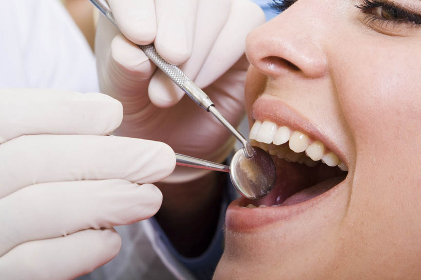
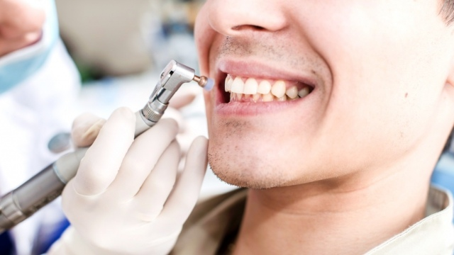

 История ухода за зубами насчитывает несколько тысячелетий. На протяжении всего этого времени дантисты говорили и говорят о необходимости профилактических мер. Древние римляне для ухода за зубами рекомендовали пользоваться порошком из измельченных кораллов и жемчуга, а немецкий ученый Карданус в 16 веке был убежден, что если сидеть несколько часов с открытым ртом, повернувшись в сторону Луны, то зубную боль как рукой снимет.
Наука с тех времен ушла далеко вперед и сейчас помогает пациентам не допустить появления кариеса, прикорневых дефектов и других неприятностей с помощью современных процедур очистки от зубного налета и камня. Данные процедуры эффективны и безболезненны, поэтому сегодня пациенты чувствуют себя намного приятнее в стоматологическом кресле, чем несколько веков и даже десятилетий назад. Мы, в свою очередь, всегда проконсультируем вас относительно того, какие гигиенические средства по уходу за зубами лучше всего Вам подходят.
Профессиональная чистка — это тот необходимый уход, который позволяет укрепить здоровье зубов и десен, а значит, предотвратить развитие серьезных заболеваний в дальнейшем. Каждый человек время от времени нуждается в этой процедуре, однако стоит отметить, что ее периодичность зависит от образа жизни и индивидуальных особенностей организма. При правильном соблюдении мер по гигиене полости рта, риск развития воспаления десен снижается на 80%, кариеса — на 40%.
В случае частого воспаления десен (пародонтита) и в целях профилактики наши специалисты настоятельно рекомендуют профессиональный уход за полостью рта, который включает не только регулярное использование специальной пасты и мягкой зубной щетки, но и чистки, удаляющие над- и поддесневые отложения посредством:
1) ультразвука – специального инструмента с микровибрацией носика, позволяющего удалять зубные камни,
2) airflow (эйрфлоу) – струя раствора соды, счищающей зубной налёт. Сода — природный очиститель. Ее использование возвращает эмали здоровую белизну, а благодаря напору происходит щадящая полировка, придающая улыбке привлекательный блеск.
3) лазера, что является самым щадящим способом отбеливания.
Для очистки имплантов лучше подойдет механическое удаление налета и камня с поверхности. После чистки следует полировка и обработка ротовой полости специальными препаратами, обладающими свойствами защиты и снятия чувствительности эмали. Тем не менее, необходимо учитывать, что отбеливание возможно только при отсутствии обширных зон поражения кариесом, анатомических аномалий и других заболеваний полости рта. Мы внимательно относимся ко всем нашим пациентам и диагностируем состояние зубов перед любой процедурой очистки, расскажем, как правильно ухаживать за ротовой полостью и чем пользоваться. Наши врачи позаботятся о здоровье ваших зубов и сделают Вашу улыбку неотразимой!